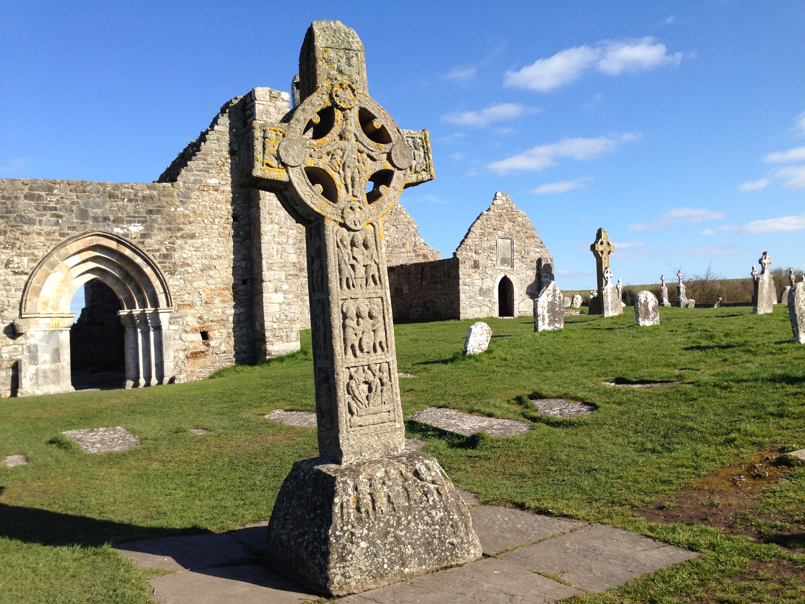
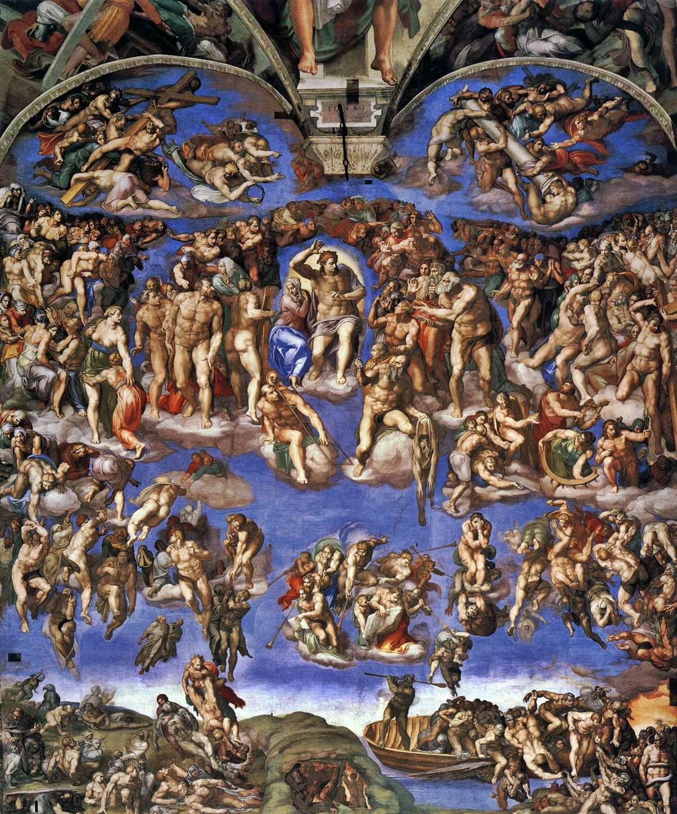
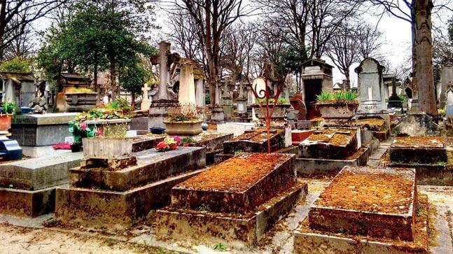
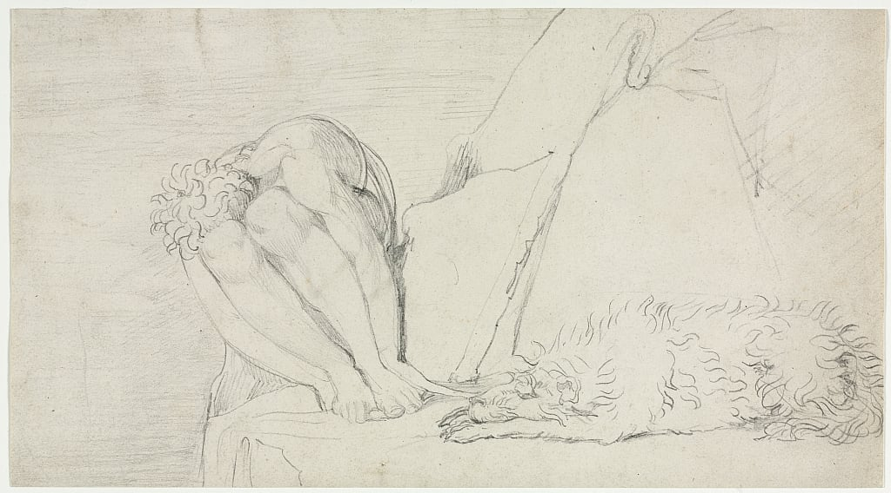
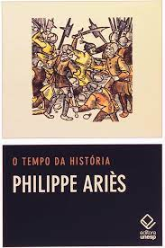
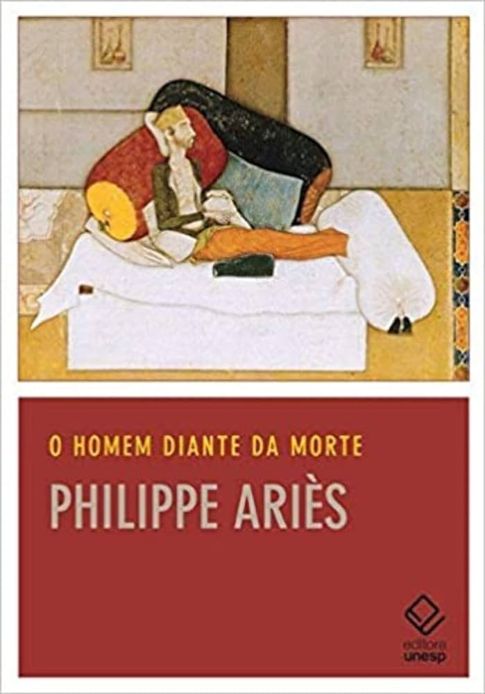
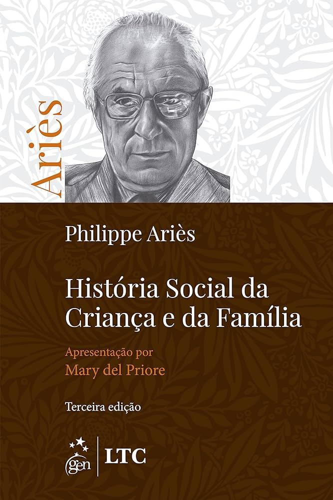

Published in 2003, historian Philippe Ariès addresses in his book human behavior in the face of death in Western society, from the beginning of the Middle Ages to Modernity. Through his studies, he describes the gradual changes in the perception of death, over the course of 15 years of research. The essays that make up The History of Death in the West have become classics since their first publication in 1975.
Philippe Ariès was born on July 21, 1914, in Blois, France. He graduated from the largest college in Paris, and died in Toulouse, in 1984. He was an important 20th century French historian and medievalist, of family and childhood, in the style of Georges Duby. Ariès wrote several books about common daily life. In addition to his historiographical work, he carried out important work as a journalist and essayist. He is the author of highly acclaimed works, such as Social History of Children and Family and On the History of Death in the West, and coordinated the History of Private Life collection. Heir to the Annales School, Ariès is considered one of the pioneers in the field of study of mentalities.
Author:
Philippe Ariès
Year:
2003
Print length:
316 pages
Publisher:
Ediouro
Saiba Mais
This book is divided into two parts, where the first part deals with attitudes towards death and the second part about Itinérarios (1966-1975). However, in this chapter we will only address the theme of the first part, which is divided into 5 chapters, namely I. Taming death, II. The death of oneself, III. The death of the other, IV. Death Forbidden and V. Conclusion

According to his studies, death in the 18th century was simple and well accepted both by family members and by the sick person, with a ceremony being held in the sick person's house, already being aware of their fate, inside their room the patient continued to their end, lying in bed.
There, a public ceremony was held, bringing together family and close friends, and also children, as during that century the presence of children in these ceremonies was something common, but nowadays it is no longer seen in the same way, and when there are issues related to death, the participation of children is withdrawn.
When starting the ceremony, the first act is the lament of life, where the patient says goodbye and gives thanks for their achievements and their loved ones. Soon after comes the forgiveness of his loved ones who surround his bed and finally the wait for his departure after saying his last words. And this was how a bed ceremony was done simply and without excessive emotional or dramatic gestures. However, even with the familiarity with death, this did not mean that the living did not fear the dead, and that is where we deal with the coexistence of living and the dead At the end of the 18th century, ancient pre-Christian civilizations honored graves in funeral services to prevent the dead from returning to disturb the living, as it was believed that the world of the living should be separated from the world of the dead, and Precisely for this reason in Rome, burial in urbe, within the city, was prohibited. And the same occurs in the Theodosian code, so that serenity is preserved in the homes of the inhabitants and for this same reason the cemeteries were located outside the cities has context menu
In this chapter, Ariès explores the change in the way medieval people viewed the death of themselves. In the Middle Ages, the emphasis was on preparing for death and hoping for eternal salvation. Death was seen as an inevitable and crucial event in the afterlife. The person was immersed in a religious and spiritual context, in which death was a passage to eternity and an opportunity for reconciliation with God. People began to value earthly life more and focus on personal fulfillment and the legacy left behind. The death of oneself has become a more private and individual event, separate from traditional religious practices.

They then leave their orders written and recorded so that they are not forgotten. Men, in an imperceptible (for them) attempt at eternalization, also immortalize the saints of their devotion, clinging to the belief that after death they begin to live in the divine dimension, alongside God, interacting with humans. Nothing very different from ancient pagan cults and their deities, but the saints had their specific place, in a temple, on an altar. And then, pagans and Christians begin to be separated after death, as now those who belong to the Church begin to be buried in the same space as the saint, thus participating, in an almost biological fusion, in their holiness. Those who belonged to the Church were those who attended the temple, fulfilled the dogmas and sacraments, contributed to the works and could pay for their burials. Their bones, after a while, ended up in an ossuary or became objects of adornment, still remaining within the limits of the sacred space. Pagans and the poor continued to be buried elsewhere.

The indifference of before now gives way to a romanticization of death, and its beauty in an intense demonstration of feelings and gestures unknown in the past, family relationships based on affection. Unconformity with the sudden separation, caused by the despair of the loss, leads to a new reflection, where the family mourns the loss, carrying out some rites for a certain period of time, fixed by the liturgy. At the end of the 18th century, the difficulty in accepting the death of another reached its peak, reaching the limits of madness, even clothing indicated mourning, mourning with ostentation and great displays of pain, in a profound movement of sensitivity.
The cult of graves and cemeteries became more intense from the 19th and 20th centuries onwards, where the dead were no longer abandoned in churches, having for themselves a space where they began to have an address, at an opportune moment, as churches were every day more intolerant of the accumulation of corpses, being accused of caring for the soul and ignoring the body. From the 19th century until 1914, in the face of a great revolution in customs, the cult of the national hero was born, and monuments dedicated to these heroes or specific facts were built and these cults began, in this way, to take root in society. The graves then become empty but memorable monuments, and through them victories are celebrated and they become expressions of patriotism. The tombs of that time appealed to the sober tone of death, through representations that invoked pain, revolt and longing, and this was the place to express feelings.
Attitudes towards death slowly changed, sometimes innovating and sometimes returning to primitive origins, as did attitudes towards religiosity and spirituality. However, with the advent of the Modern Age, death began to be seen as something to be avoided and postponed. Society began to focus on the search for youth and immortality, and death became a taboo, something to be hidden and denied. Variations of these expressions can be seen from large monuments to the simplicity of graves in some regions. Death, as a force of nature, is present at all times, and the differences in relationships with this eminent fact can be observed based on the culture of each people. Westerners today treat death as taboo.

The melancholy brought by the presence of death makes man see it as an evil, trying not to think about it and how inherent it is to life. When dealing with death, indigenous people, for example, have very different points of view from ours, as do Asians. This is due to their spiritual and cultural stances, which makes them see death as a necessary transformation, so that the world and life can continue to exist. From the 18th century onwards, the Church prohibited burials on its premises and even within cities, but in other regions the customs remained. Nowadays, we see a rejection of society towards Death, hospitals take care of the sick and, consequently, the dead. Forbidden or savage death appears in a desacralized society, where human beings direct their faith towards science, as a means of circumventing death and their hopes.
Philippe Ariès' work, "The History of Death in the West", is a profound and impactful exploration of the transformations in perceptions and attitudes towards death throughout Western history. Ariès demonstrates how death evolved from a natural part of life and community in the Middle Ages to become a more private and often taboo event in the Modern Age. It highlights how society, religion, medicine and culture have played essential roles in changing perceptions of death. The conclusion we can draw from the work is that attitudes towards death are highly influenced by the historical and cultural circumstances of a time. Death is not a static concept, but rather a reflection of social and individual transformations. Ariès' work reminds us of the importance of understanding the history of death to understand the complex relationship between life, death and society.
“In the past, death was a tragedy – often comical
– In which the role of the one who is going to die was played.
Today, death is a comedy – often dramatic – where
the role of someone who doesn’t know he’s going to die is played.”
Philippe Ariès (1914 – 1984)

In this work we see the confrontation of the past with the present, of tradition with innovation, and the recognition of continuities and discontinuities in the historical process, and through them, understanding the present time and the meaning of history

The work analyzes how cultural conceptions about death have affected the way people face the end of life, going from a closer and more integrated view of death in society to a more private and individualized approach.

Published in 1960. Ariès traces the evolution of perceptions and treatment of children throughout European history. As time progressed, attitudes towards children changed, and childhood began to be valued as a distinct phase of life.